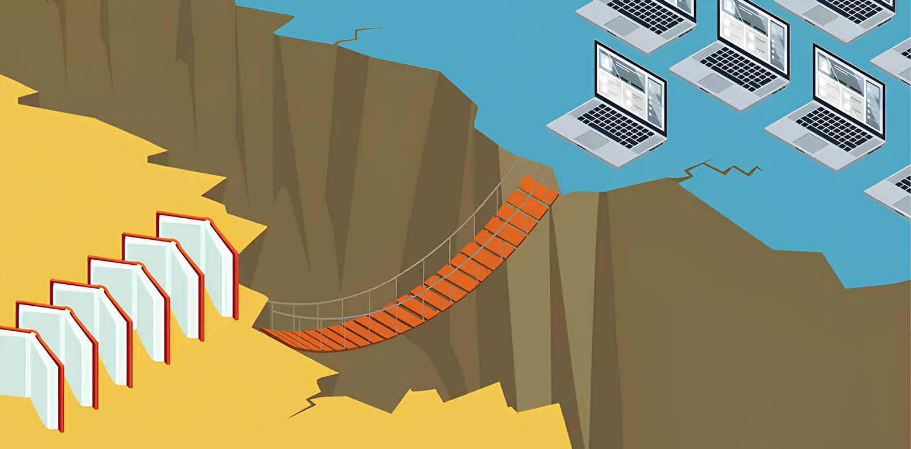

Iniziative per ridurre il Digital Divide
Il digital divide è una barriera che limita opportunità e sviluppo. Per superarlo, servono interventi mirati che migliorino l’accesso alle tecnologie digitali e l’alfabetizzazione informatica. Ecco le soluzioni chiave per un mondo più inclusivo:
-
Espansione delle infrastrutture digitali:Investire in reti internet più accessibili e affidabili, specialmente nelle zone rurali e meno sviluppate. Promuovere la diffusione della banda larga e del 5G per migliorare la connettività globale.
-
Accessibilità economica:Creare politiche che rendano dispositivi e connessioni più accessibili, con incentivi economici e prezzi agevolati per le fasce più vulnerabili. Distribuire strumenti tecnologici gratuiti o a basso costo nelle scuole e nelle comunità svantaggiate.
-
Educazione digitale per tutti:Introdurre programmi di alfabetizzazione digitale nelle scuole e nei luoghi di lavoro. Offrire corsi di formazione per chi non ha esperienza con le tecnologie, aiutando persone di tutte le età a sviluppare competenze digitali.
-
Politiche di inclusione digitale:Sostenere leggi e iniziative governative che promuovano un accesso equo alla tecnologia. Collaborare con aziende e organizzazioni non profit per creare soluzioni su misura per le comunità svantaggiate.
-
Sensibilizzazione e coinvolgimento sociale:Diffondere informazioni sui benefici di un mondo digitale accessibile per tutti. Coinvolgere la società civile, le imprese e gli enti pubblici per sostenere progetti che riducano il divario digitale.
Un Futuro Senza Barriere
Ridurre il digital divide significa dare a tutti la possibilità di partecipare attivamente alla società digitale. Con infrastrutture adeguate, accessibilità economica, educazione e politiche inclusive, possiamo costruire un futuro più equo e connesso per tutti.
